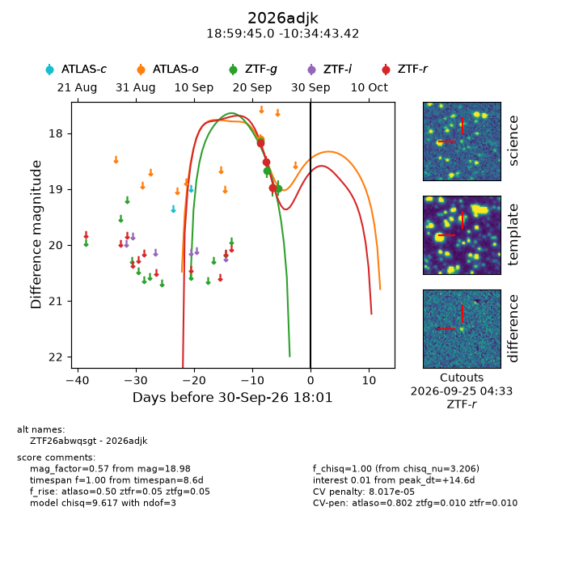
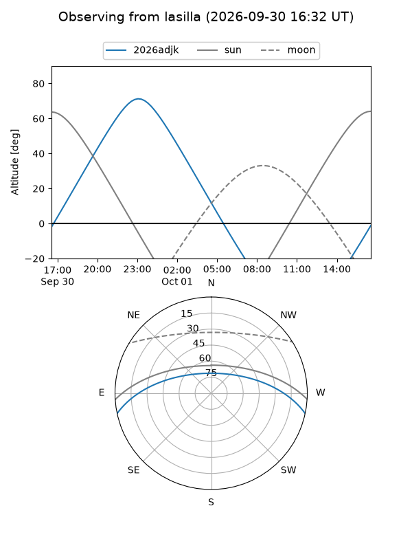
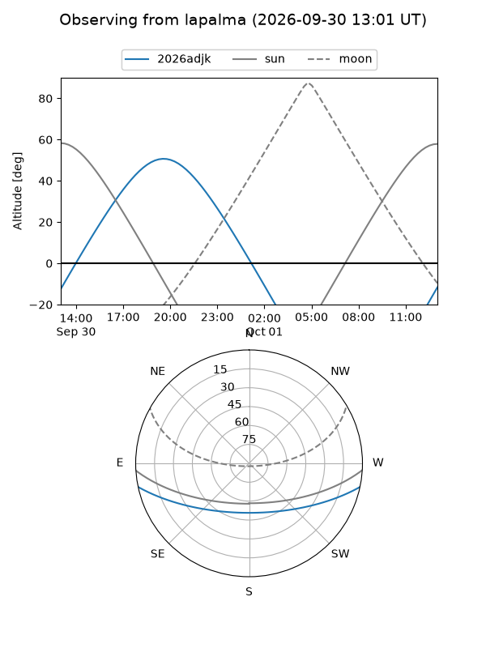
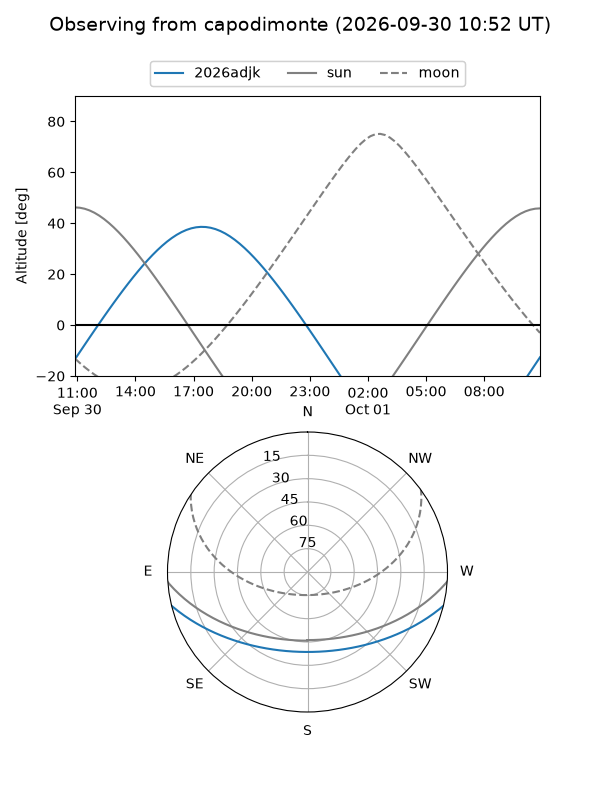
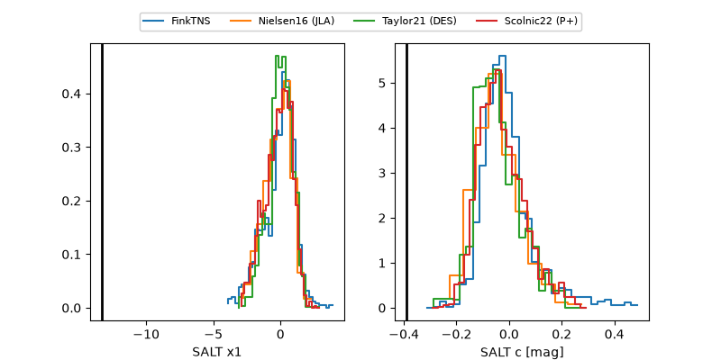

2026adjk
Target 2026adjk at 2026-09-30 18:03
Aliases and brokers:
FINK-ZTF: ztf.fink-portal.org/ZTF26abwqsgt
Lasair-ZTF: lasair-ztf.lsst.ac.uk/objects/ZTF26abwqsgt
ALeRCE-ZTF: alerce.online/object/ZTF26abwqsgt
YSE-PZ: ziggy.ucolick.org/yse/transient_detail/2026adjk
TNS name: wis-tns.org/object/2026adjk
Direct TNS query: direct search
alt names
ZTF26abwqsgt (ztf,fink_ztf)
2026adjk (tns,yse)
Coordinates:
equatorial (ra, dec) = 284.9374,-10.57873
equatorial (HMS+DMS) = 18:59:44.99,-10:34:43.42
galactic (l, b) = (24.4135,-6.62868)
Flags:
TNS type: nan
peak dt: +14.6
likely cv: !!
Photometry:
last atlaso=18.10, ztfg=18.98, ztfr=18.97
1 atlaso, 4 ztfg, 3 ztfr detections
Lightcurve

Visibility



Additional plots
